Os cistos pilares (triquilemais) são cistos benignos comuns de origem no folículo capilar, encontrados com mais frequência no couro cabeludo. Histologicamente, eles são revestidos por epitélio multicamadas que não amadurece através de uma camada granular.
Etiologia e epidemiologia
Os cistos pilares são comuns, atingindo 5-10% da população. Contêm queratina e se originam da bainha externa do folículo piloso. Localizam-se, mais frequentemente, no couro cabeludo (90%). Podem ser esporádicos ou serem herdados de forma autossômica dominante. São mais encontrados em mulheres que em homens e mais frequentes na meia-idade.
Manifestações clínicas e fisiopatologia
Os cistos pilares são cistos intradérmicos que surgem do epitélio localizado entre a glândula sebácea e o músculo eretor do pelo. O cisto pilar é clinicamente semelhante ao cisto epidermoide, diferindo por sua comunicação com a superfície ser raramente observada (não há punctum visível) e por sua menor frequência, representando 10% dos cistos cutâneos. Os cistos pilares são solitários em 30% dos casos e múltiplos em 70% dos pacientes. Histologicamente não apresenta a camada granulosa e podem apresentar calcificação em 25% dos casos. Cerca de 2% dos cistos pilares podem originar um cisto triquilemal proliferativo que cresce rapidamente. Embora biologicamente benigno, pode ser localmente agressivo, tornando-se grande e ulcerado. A taxa de crescimento do cisto pilar é normalmente lenta. Os cistos triquilemais geralmente se apresentam como nódulos cor de carne, lisos, móveis, firmes e bem circunscritos. As lesões raramente surgem nas palmas das mãos, genitália, axilas e virilha.
Diagnóstico
O diagnóstico é prevalentemente clínico, embora a a lesão deva ser submetida à avaliação histológica para determinar o grau de malignidade, sendo atipia e alta taxa mitótica sugestivas de malignidade. A transformação maligna é extremamente rara.
Diagnóstico diferencial
Cisto epidermoide , Cisto dermoide cutâneo, Tumor piloso proliferativo, Tumor triquilemal proliferativo maligno, Osteoma cutis, Pilomatricoma, Lipoma, Neurofibroma solitário, Pseudolinfoma , Acne queloidiana da nuca, Doença de Favre e Racouchot e Furunculose devem ser considerados como diagnósticos diferenciais.
Tratamento
O tratamento é igual ao do cisto epidermoide com remoção completa da lesão. Se o cisto se romper, pode haver um granuloma de corpo estranho que pode simular infecção. A incisão e drenagem de detritos queratinosos geralmente é uma terapia adequada. Raramente, os cistos podem se tornar verdadeiramente infectados. Se isso ocorrer, um curso de antibióticos orais é indicado. É válido lembrar que a recorrência em casos de incisão é próxima de 3%, como nos casos de cisto epidérmico.
REFERÊNCIAS BIBLIOGRÁFICAS
1. Pilar cyst on the dorsum of hand: A case report and review of literature. Meng Liu, Haicheng Han, Yan Zheng, Shengxiang Xiao, Yiguo Feng. Medicine (Baltimore) 2020 Jul 31; 99(31): e21519.
2. Atypical Presentation of Pilar Cyst Over the Volar Aspect of the Thumb: A Case Report and Review of Literature. Suneel Ramanujapuram, Apurve Parameswaran, Murtuza A Mohammed, Anil K Reddy, Krishna K Eachempati. Cureus. 2024 Feb; 16(2): e55296.
3. Clinicopathological Appraisal of Cutaneous Cysts: A 2-Year Retrospective Observational Study. Geeti Khullar, Mithilesh Chandra. Indian Dermatol Online J. 2023 Nov-Dec; 14(6): 844–848.
4. Pilar Cyst of the Dorsal Hand: A Rare Presentation of a Common Cyst. Ryan Ladd, Sarah E Smith, David J DiCaudo, Ramin Fathi, Shari Ochoa. Cureus. 2024 May; 16(5): e60865.
5. Multiple Giant Pilar Cyst Distributed Over the Body Since Childhood. Ali Asilian, Amir Hossein Siadat, Zabiolah Shahmoradi, Sheila Shariat, Nooshin Afshar Moghadam, Hamid Soozangar. Indian J Dermatol. 2016 Jan-Feb; 61(1): 121.
Atlas de imagens 16

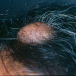

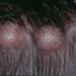

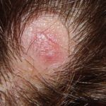

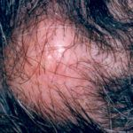

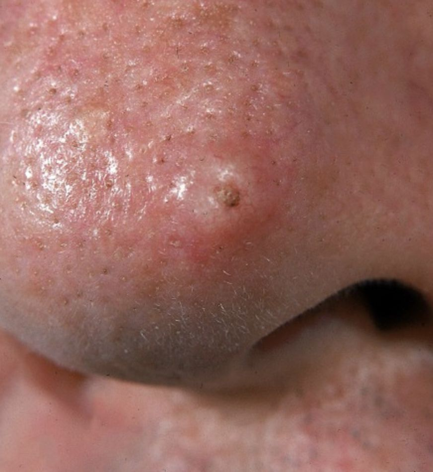

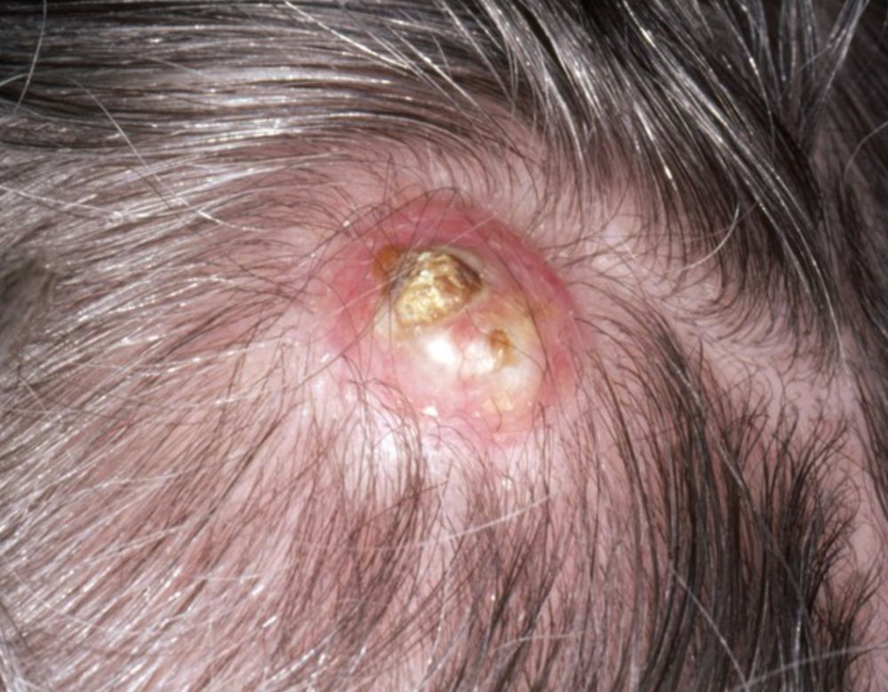

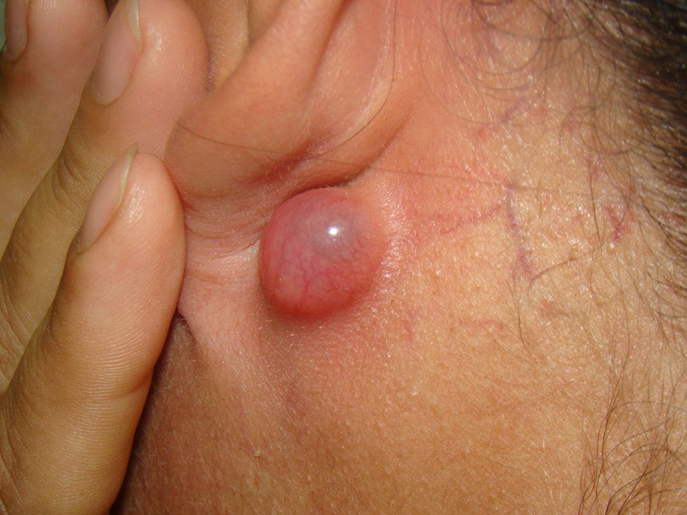

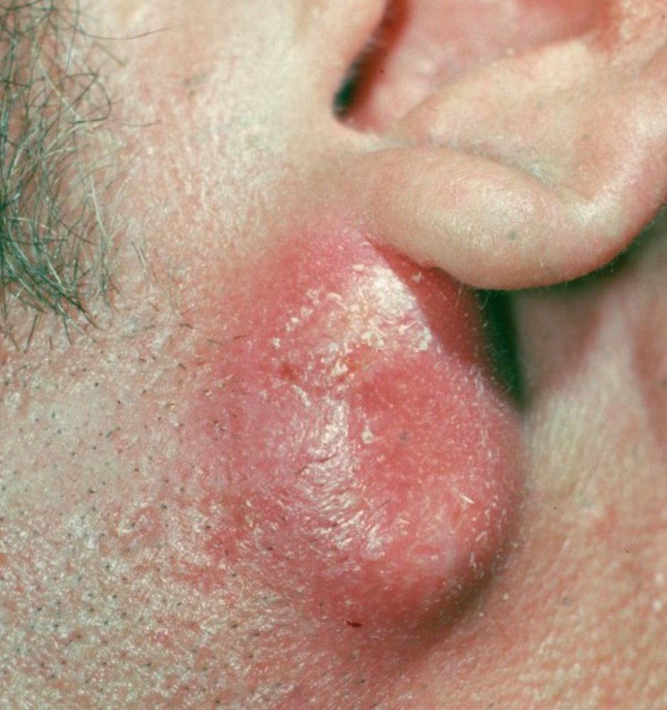

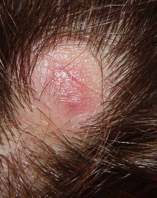

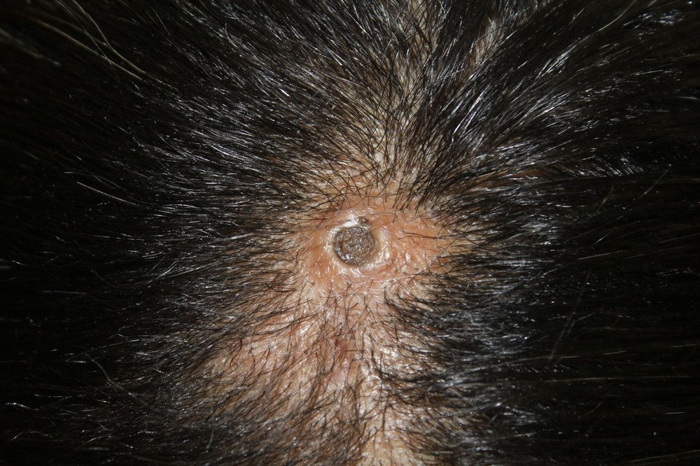

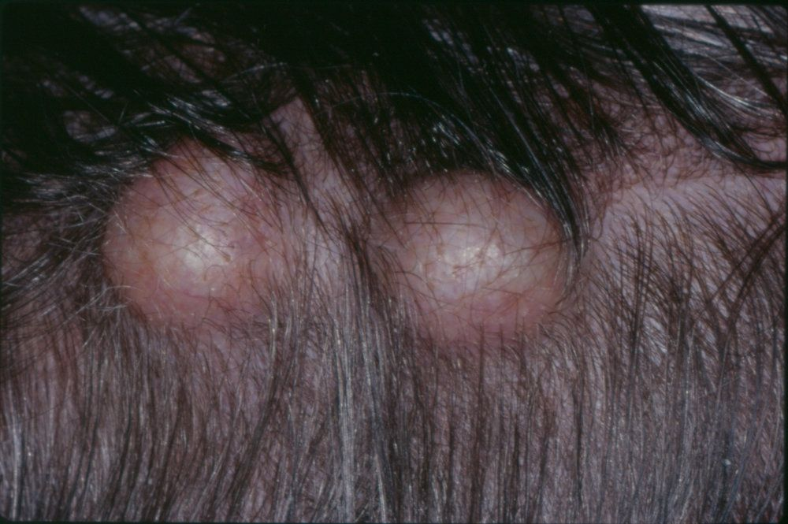

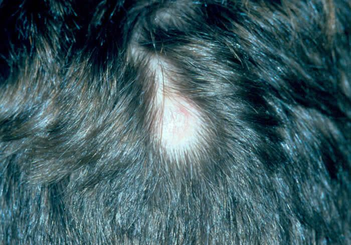

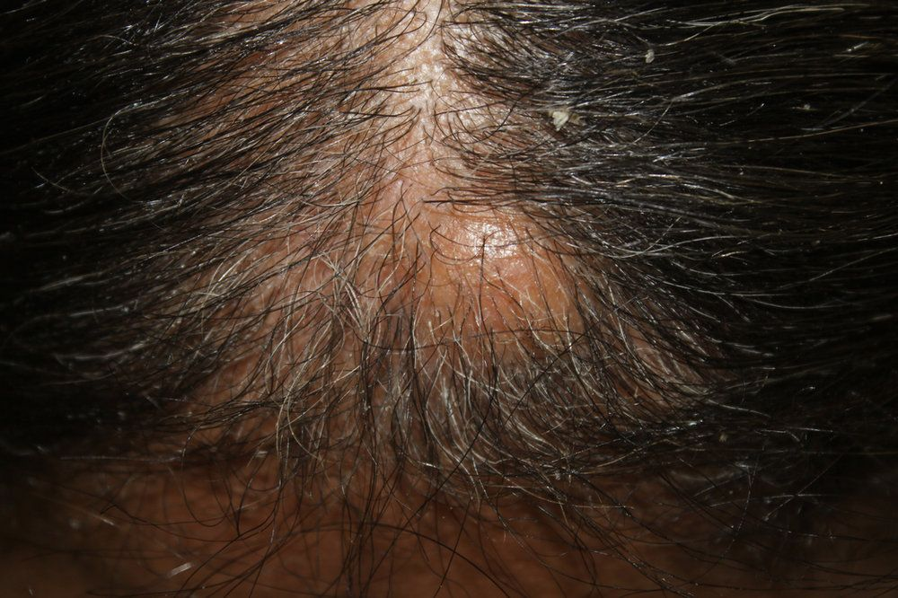

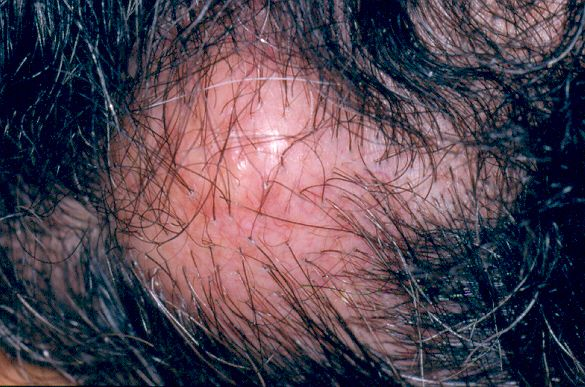

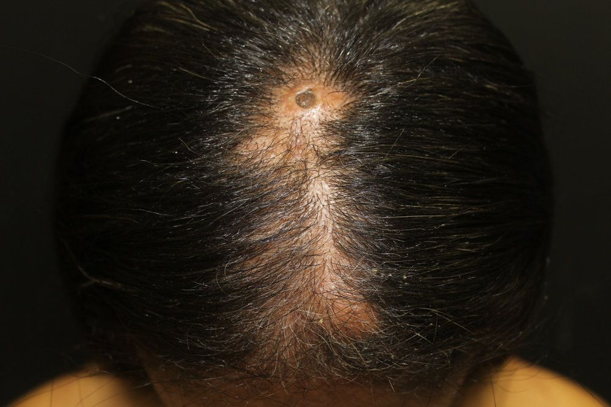

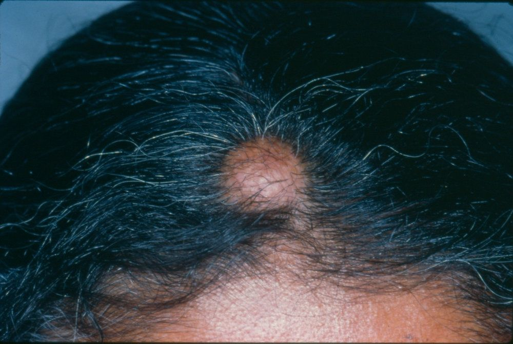
Na Skin Prime
Como podemos ajudar
O texto sobre Cisto Triquilemal ou Pilar não cita procedimentos específicos entre os oferecidos pela clínica. A conduta é definida em consulta: nossa equipe avalia as manifestações na pele e orienta o tratamento ou o encaminhamento adequado.